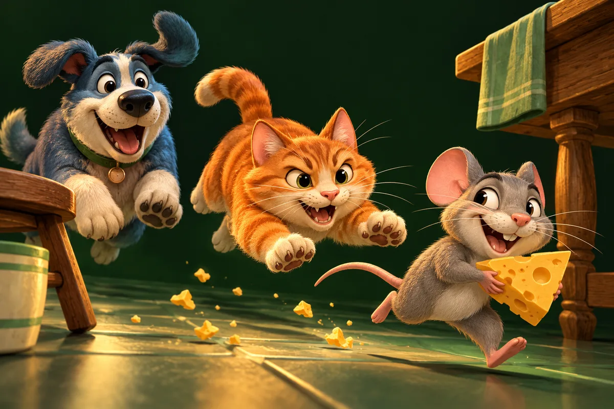

Billa Chuha Chase
One kitchen. Three teams. Bring your friends.
Checking players online in Chase…
Featured multiplayer game
YOUR NEXT ADVENTURE STARTS HERE
Chase, jump, explore or battle. Discover a growing collection of games and find your own way to play.
11 games · Free to play in your browser

THE GAME LIBRARY
No matches yet. Try another search or clear the filters to see the whole collection.
One kitchen. Three teams. Bring your friends.
Checking players online in Chase…
Featured multiplayer game
Sneak past Cat guards and Dog cameras to steal every last piece of cheese.
Fly, dash and unleash energy powers in aerial stick-warrior battles.
Billa Chuha is Osieq’s gaming platform, built around the mischief of cats, rats and dogs, with arcade extras to explore. Choose a solo challenge or meet friends in Chase. Each game has its own controls and introduction.